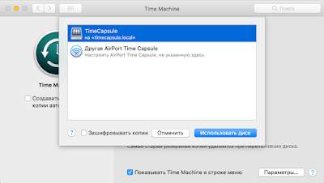

sudo blkid
ls -l /dev/disk/by-uuid
=================================================================================
Подключение usb-диска в Ubuntu 18.04.1
Начнем с того, что диск мы будем подключать на века, то есть это не сменный носитель, который подключается на время. Мы должны монтировать его при каждой загрузке нашего сервера. Отключение физически диска планируется только когда сервер упадет. По этому нужно трогать fstab — файл, где прописаны подключаемые диски. Перед его редактированием узнаем UUID нашего диска. Выполняем команду:
ls -l /dev/disk/by-uuid
В результате, система покажет нам список всех дисков и указанием их UUID. Примерно это выглядит вот так:
Я знаю, что мой диск подключен как /dev/sdb и на нем один раздел sdb1. Соответственно UUID этого раздела 7ca29b33-2d5c-4d64-b9b3-0a4e6d89f8b9. Запоминаем это значение и редактируем наш fstab. Выполняем команду:
nano /etc/fstab
Добавляем туда строчку «UUID=7ca29b33-2d5c-4d64-b9b3-0a4e6d89f8b9 /mnt/usb1 ext4 defaults 0 0», где UUID заменяем на ваше значение. О чем говорит эта строчка: мы подключаем диск с UUID=7ca29b33-2d5c-4d64-b9b3-0a4e6d89f8b9 в директорию /mnt/usb1 и используем файловую систему ext4. Все параметры подключения у нас установлены «по умолчанию».
Теперь можно попытаться перезагрузить компьютер и внешний диск при этом должен подключиться автоматически в директорию /mnt/usb1. Если этого не произошло, ищем ошибки и исправляем их. Двигаться дальше будет бесполезно.
Настройка AFP протокола на Ubuntu 18.04.1
Для установки и настройки родного протокола для Apple будем использовать библиотеку netatalk 3.1.11-1. Далее приведу код с комментариями. Выполняйте команды построчно за исключением комментариев.
# Переходим в директорию cd /usr/src/
cd /usr/src/
# Скачиваем библиотеку
wget http://prdownloads.sourceforge.net/netatalk/netatalk-3.1.11.tar.gz?download
# Переименовываем полученный файл в netatalk-3.1.11.tar.gz
mv netatalk-3.1.11.tar.gz\?download netatalk-3.1.11.tar.gz
# Распаковываем архив netatalk-3.1.11.tar.gz
tar -zxvf netatalk-3.1.11.tar.gz
# Переходим в новый каталог netatalk-3.1.11
cd netatalk-3.1.11
# Устанавливаем программы, которые нам понадобятся для настройки и установки netatalk
apt install build-essential libdb-dev libgcrypt20-dev checkinstall
Вот теперь мы все подготовили к установке netatalk. Привычная конструкция make & make install нам не подходит. При настройке будут заданы некоторые вопросы и нам придется на них ответить. Для начала запускаем создание сценария командой make. По окончании подготовки запускаем checkinstall.
Первый вопрос, который нам зададут «Should I create a default set of package docs? [y]: n«, отвечаем NO (n).
Далее нас попросят ввести описание пакета. «Please write a description for the package. End your description with an empty line or EOF.» Вводим netatalk и жмем Enter.
Следующим шагом будет вопросы по редактированию параметров пакета. Нам нужно изменить только 13-й параметр «Replaces». Заменим его на netatalk. Все остальное оставим по умолчанию.
Enter a number to change any of them or press ENTER to continue: 13
Enter the replaced packages:
>> netatalk
Следующим шагом нас спросят хотим ли мы посмотреть содержимое пакета. Мне это было не интересно и я нажал n.
Do you want me to list them? [n]:
Ну и в заключении подтверждаем все наши ответы и заканчиваем установку netatalk.
Should I exclude them from the package? (Saying yes is a good idea) [y]:
Осталось только настроить протокол afp. Для этого редактируем файл /etc/afp.conf. Не все настройки там приведены по умолчанию. Их гораздо больше и нам придется внести их руками.
;
; Netatalk 3.x configuration file
;
; Основные настройки сервера
[Global]
; Global server settings
uam path = /usr/local/lib/netatalk
uam list = uams_dhx.so uams_dhx2.so uams_guest.so
guest account = nobody
mimic model = RackMac
; [Homes]
; basedir regex = /xxxx
; [My AFP Volume]
; path = /path/to/volume
; [My Time Machine Volume]
; path = /path/to/backup
; time machine = yes
;Настройка доступа к нашему диску для резервных копий
[storage]
path = /mnt/usb1/
valid users = nobody
Что мы здесь добавили в общем разделе:
Что мы здесь добавили в разделе с нашим диском:
Перезапускаем нашу службу командой systemctl restart netatalk. Доступ настроен. Теперь осталось толко сообщить всем компьютерам о наличии в сети нового сервера. Для этого установим Avahi.
Установка Avahi на Ubuntu server 18.04.1
Здесь все гораздо проще. Пакет Avahi присутствует в репозитарии. Просто выполним две команды:
sudo apt install avahi-daemon
sudo apt install libnss-mdns
Установив два этих пакета, нужно немного покопаться с настройками. Совсем немого.
Во первых подправим nsswitch.conf. Откройте его на редактирование командой nano /etc/nsswitch.conf. Найдите строку hosts: files mdns4_minimal [NOTFOUND=return] dns и добавьте в конец mdns4 mdns. В конечном итоге строка должна выглядить так:
hosts: files mdns4_minimal [NOTFOUND=return] dns mdns4 mdns
Для соединения службы Avahi с протоколом AFP нужно создать файл /etc/avahi/services/afpd.service со следующим содержанием:
<?xml version="1.0" standalone='no'?><!--*-nxml-*-->
<!DOCTYPE service-group SYSTEM "avahi-service.dtd">
<service-group>
<name replace-wildcards="yes">%h</name>
<service>
<type>_afpovertcp._tcp</type>
<port>548</port>
</service>
<service>
<type>_device-info._tcp</type>
<port>0</port>
<txt-record>model=Xserve</txt-record>
</service>
<service>
<type>_adisk._tcp</type>
<port>9</port>
<txt-record>sys=waMa=0,adVF=0x100,adVU=00000000-AAAA-BBBB-CCCC-111111111111</txt-record>
<txt-record>dk0=adVN=TimeCapsule,adVF=0x81</txt-record>
</service>
</service-group>
Сохраняем файл, закрываем его и перезапускаем службу Avahi:
sudo /etc/init.d/avahi-daemon restart
Вот и все, наш сервер для резервного копирования готов. Можно настраивать нашу Time Machine для создания резервных копий.

Это все, что я хотел рассказать о самодельной Time Capsule на Ubuntu server 18.04.1.